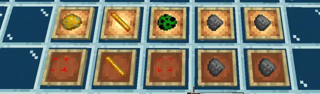
这里先把作为演示的视频贴出来，看不懂的可以先去这2个视频里看一眼，第1个是旧版，第2个是新版的一个小更改，效果上来说比较直观易懂，问题不大
B 站视频 » B 站视频 »然后的话，这里就来进入正题，首先就是掉落物，我们要知道，掉落物按照分类不同可以分为普通掉落物跟稀有掉落物以及装备之类的（注意下面所说的仅针对被玩家打死就能直接掉落的，其他头颅、唱片、碗之类需要额外特殊操作的不在讨论范围内），问题不大
不过实际上有一部分掉落物被称为专属掉落物，可以是普通也可以是稀有，就比如烈焰杆、药水箭、蜘蛛眼之类的就属于普通掉落物，凋零骷髅头、金铜铁锭、胡萝卜、土豆之类的就属于稀有掉落物，问题不大
但是这里需要注意只有兔子掉落的兔子脚才是专属掉落物，尸壳骆驼骑士那个掉落的属于普通掉落物，但是僵尸马其实掉落的红蘑菇属于专属掉落物，这两个类型不一样，确实有点奇怪，问题不大
区分的方法倒是挺容易，就是掉落概率能不能被抢夺加成，稀有掉落物是可以普通掉落物不行，但是普通掉落物可以被抢夺加成掉落上限，稀有掉落物不行，不过这个和我们要讲的第一点关系并不大，所以进入正题
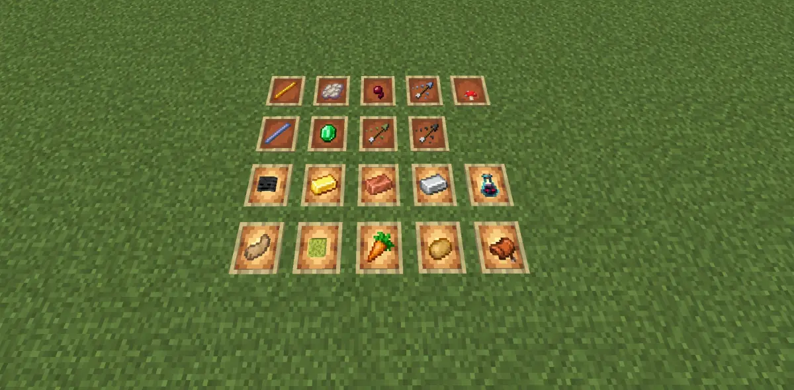
一.专属掉落物相关
那么，首先就是这个专属掉落物，被非单纯的玩家以外的方式所击杀（其中部分包括狗子），100%不会掉落，只有直接被玩家击杀，或者被玩家进行攻击行为后一定時间内（约20s），因为其他原因死亡，则可以进行专属掉落物的掉落计算，计算方式根据普通掉落物与稀有掉落物种类不同而不同（其中湿海绵、灾厄瓶、鞍固定100%）
但是这两种方式对于抢夺的计算不同，被玩家直接打死理所应当的自然是计算玩家当前的抢夺状态，至于另外一种新旧版本有所不同，分界线是1.21.120.20，在此之前因为其他因素死亡则是根据造成其死亡的因素的抢夺状态来进行抢夺判断，比如被玩家手持抢夺3攻击后摔死和被抢夺3战斗法师打死，虽然都能掉落专属掉落物，二者均不能享受玩家手上的抢夺3，但后者可以享受战斗法师手上的抢夺3，也就是抢夺是按照造成致命一击的原因的抢夺状态来计算，问题不大
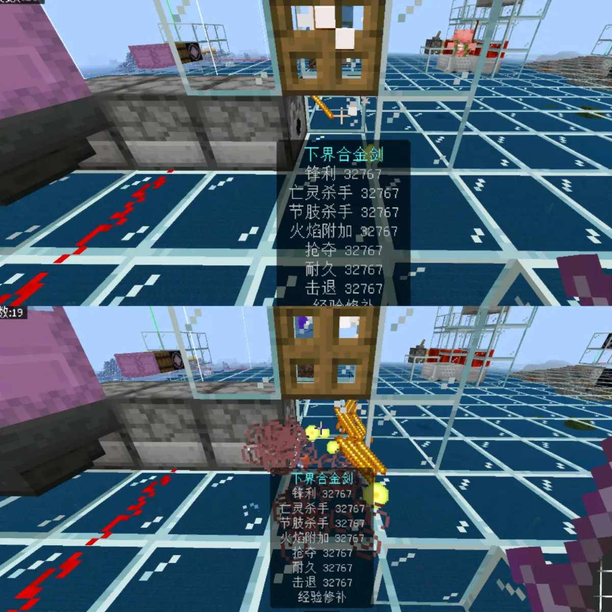
但是从1.21.120.20开始，对这一点进行了更改，当然仅针对玩家的更改，其他生物并不适用，从这个版本开始被玩家攻击之后的20秒内，因为其他原因死亡依然可以吃到玩家手上的抢夺加成，不管是摔死烫死还是被别的生物打死都行
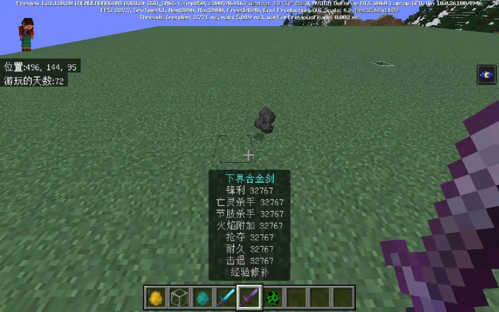
另外如果二者手上都有抢夺，那么就看谁手上抢夺的附魔等级更高，就按谁手上的抢夺来生效，问题不大
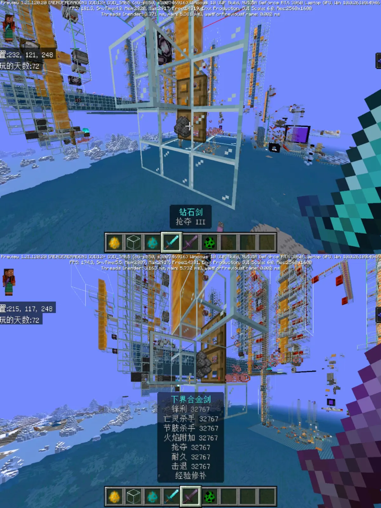
然后的话就是，需要注意的一点就是，必须是玩家进行的攻击行为后的20秒内，而且大部分的狗子攻击是不可以的，这一部分如果是被狗子攻击之后死亡或者直接被狗子咬死，虽然经验和装备可以掉落，但是专属掉落物是绝对不会掉落的（即使是100%掉率的湿海绵），也不会受到玩家手上抢夺的加成，是需要注意的，问题不大
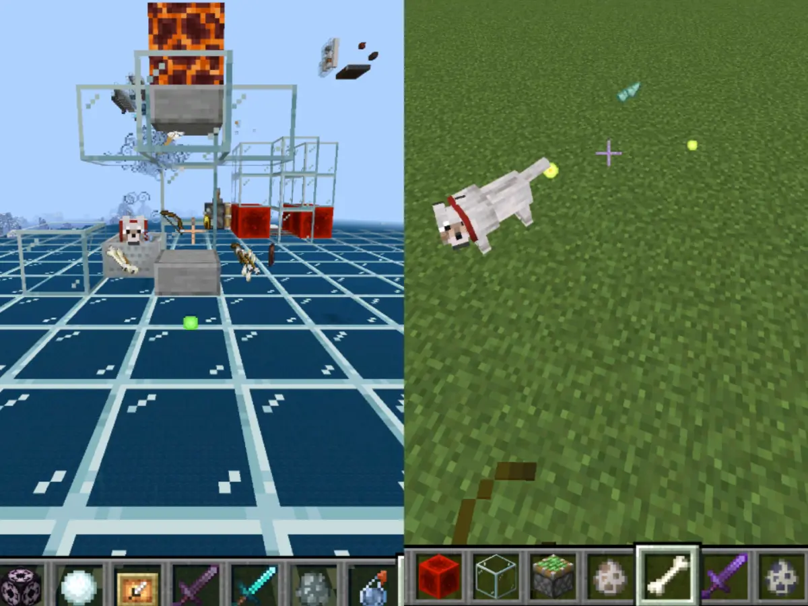
而能够被在狗子咬死的情况下也能掉落的专属掉落物只有六种生物的掉落物，烈焰人、旋风人、沼泽骷髅、水鬼、普通僵尸及其变种、僵尸猪人，只有这六种是被狗咬死后也能掉落自身专属掉落物的，问题不大
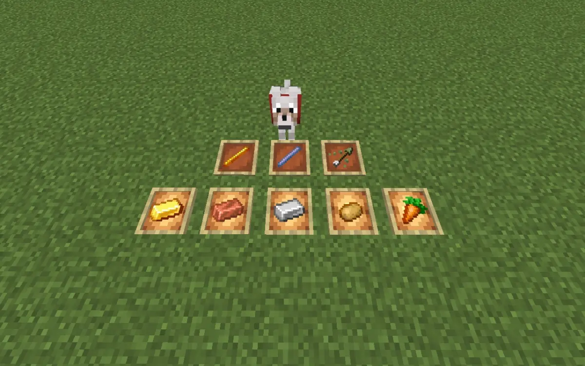
但是我们需要注意一点就是，这个被狗咬和被玩家击中是不一样的，就是虽然这二者都是在被击中之后20秒内仍然有经验掉落，但是玩家的是在此期间因其他原因死亡仍然可以掉落专属掉落物，但是狗的不是，狗的必须是由狗造成的击杀，被狗咬了之后再因为其他原因死亡是不能掉落上面那几种专属掉落物的
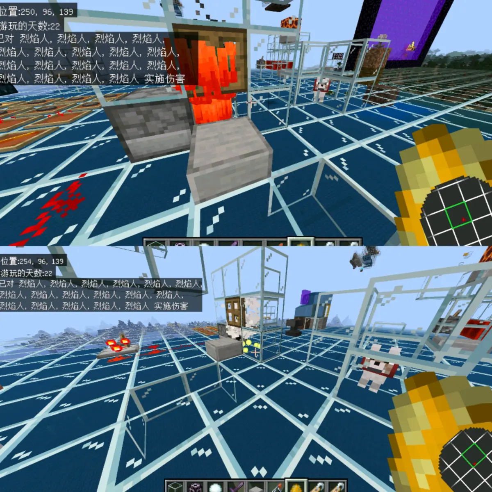
这里图片当中演示的是先让狗造成伤害，再被32k的女巫击杀，结果是有经验，但是没有掉落物，而单纯让狗击杀的结果是有掉落物，并且其他几种生物也进行了测试，均是这个结果
而且似乎被狗咬的这个标签会覆盖掉玩家攻击的标签，也就是说按照玩家和狗之间最后一次攻击的执行者来，问题不大
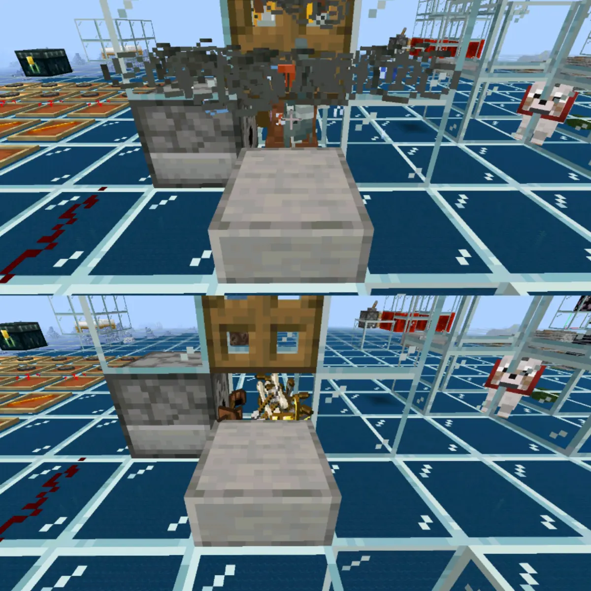
这里演示的是，流浪者先让玩家进行攻击后再被狗的攻击杀死，结果是不会掉落专属掉落物，证明玩家的攻击标签被狗覆盖了，而反过来的结果是可以掉落，也就代表玩家和狗的攻击标签是可以相互覆盖的，属于后来居上的关系，问题不大
这个东西其实很早之前就有人发现这个问题了，就是关于抢夺的实际效率和理论计算效率不一致的问题，比较耳熟能详的就是基础掉落0-1的烈焰人抢夺3理论计算是4倍效率（即(0+1)/2到(0+4)/2），但实际只有2.5倍，基础掉落0-2的苦力怕抢夺3理论计算是2.5倍的效率（即(0+2)/2到(0+5)/2），但实际上是2倍效率，这个实际上都和抢夺的一个计算特性相关
首先来看一下，为什么之前理论计算出来是这个4倍和2.5倍的结果，就是因为我们在计算的过程中，是对于0-n的所有值都进行了上限加3，也就是0的情况也被算为了0-3，也就相当于是直接对整体效率平均值增加了1.5
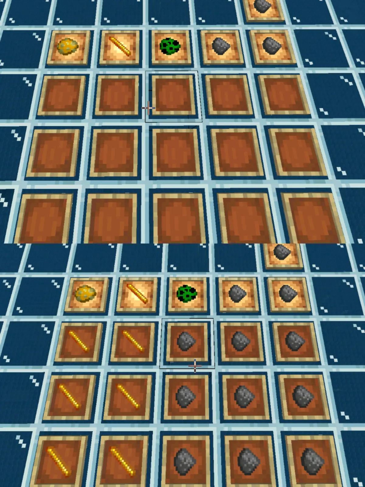
但是实际上抢夺的规则并不是这么计算的，不知道是麻将写代码出的漏洞还是什么，反正这个确实是从古早版本就一直是这样，我们这里放一个现象，你就能够很明显的发现问题所在，真的很明显，我们也就是因为偶然间测试出来这个现象才发现的这个问题所在
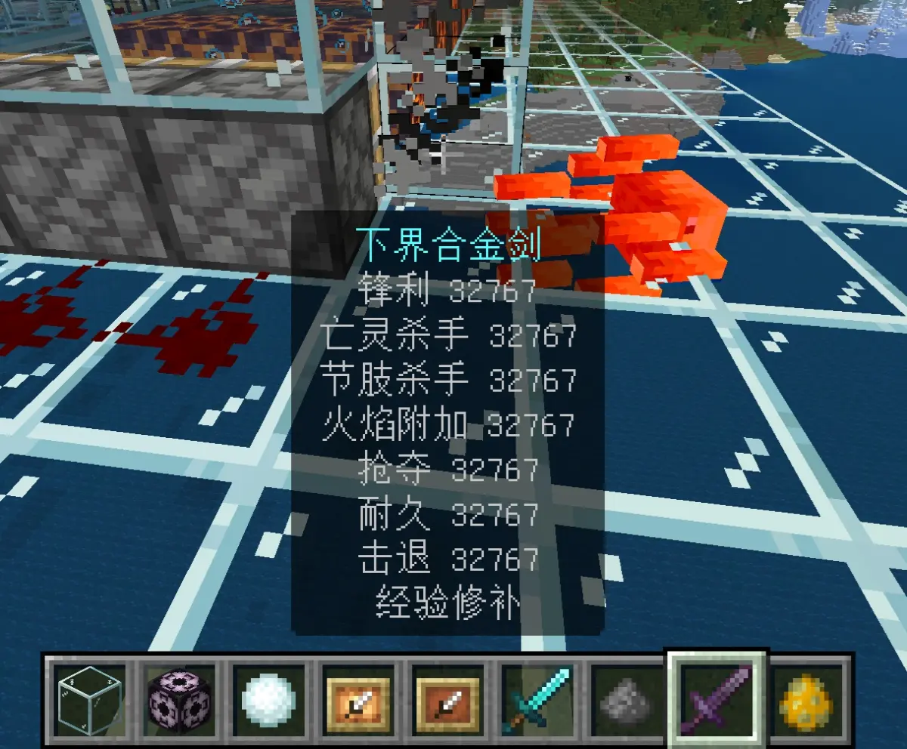
没错，就是0-n掉落物的生物被32k击杀后可以不掉落物品，而且不掉落的概率和基础概率当中0的权重一致，也就是烈焰人有1/2概率不掉苦力怕有1/3概率不掉这种类推，这个测试结果是经过了群友凡尘大量的测试，我们自己也测试了之后证明了的，问题不大
那么看到这里，你大概就知道这个问题出在哪了，没错，就是在计算抢夺的時候，是先从基础概率（0-n）当中随机取一个值，然后再对这个值进行上限增加并随机抽取，但是如果一开始取到的值0，那么后面就不会执行这个上限增加再随机抽取的操作，问题不大
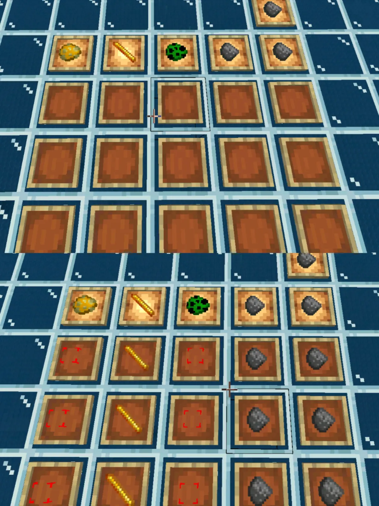
也就相当于抢夺3的实际效果实际上，是将权重为(n-1)/n的非0基础掉落物数量进行上限加3再随机抽取，也就是实际上是将掉落物上限变为权重为(n-1)/n的1-(n+3)，而不是直接将整体的掉落物上限变为权重为1的0-(n+3)，这也就是为什么之前计算的结果跟实际的结果不一致的原因，问题不大
而且根据这个，你再进行计算就会发现，算出来的结果就和实际测试的结果吻合，也就是烈焰人0-1为2.5倍（(0+1)/2×1到(1+4)/2/2），苦力怕0-2为2倍（(0+2)/2×1到(1+5)/2×2/3）等等，也是可以证明确实是这样子计算的没有问题，其他的也就可以以此类推，问题不大
行吧，那就这样，其实说实话，一开始只是单纯的在测试第一点，也就是被玩家攻击后再通过女巫抢夺专属掉落物的可行性，只是利用32k进行爆率加成来保证测试准确性的过程中凡尘测试的時候发现这玩意居然能不掉落，然后我们进一步测试才挖掘出这么一坨远古屎山，没想到还顺便解决了之前这个一直困扰的抢夺效率计算与实际不符的问题，属实就是印证了一句话，基岩版的屎山总能在不经意间冒出来，然后被发现，问题不大
行吧，那就这样，其他也没什么可说的，就是单纯的分享一下这两个东西的部分机制，看不懂的可以看一下顶上演示的视频，那就这样，到此结束，问题不大
测试版本号：1.21.60.24、1.21.51、1.21.120.20
辅助测试：夜鸮Owlet、凡尘
补充：deathotk